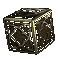
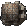
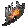
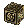
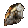
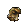
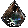

01 / QUALITY OF LIFE
界面与便利
- 画面
- 支持宽屏、60 帧以上的帧率和高清文字。
- 仓库与方块
- 储藏箱为 10×15 格，赫拉迪姆方块为 4×4 格；PD2 官服提供 9 页共享仓库与材料标签。
- 物品栏
- 扩展为 10×8 格，下方四排是护身符生效区。
- 材料堆叠
- 宝石、符文、精华、超级钥匙和器官均可堆叠。
- 便利操作
- 自动拾取金币、物品过滤与快速施法；PD2 官服还提供全球天梯。
搜索资料分类，选择结果后打开对应页面。
✦ YOUR FIRST STEPS
Project Diablo 2 在《暗黑破坏神 2：毁灭之王》的基础上调整了游戏体验、战斗平衡与终局玩法。流放圣所建立在这些基础之上，并进一步扩展了玩法。

赫拉迪姆方块的配方体系大幅扩展，可用于更多合成与装备制作。了解更多：档案馆新手教程 ↗ · PD2 中文维基 · 通用改动 ↗
流放圣所基于 Project Diablo 2，扩展了角色成长、装备打造与终局内容。从推进剧情到挑战地图，可以循着下面的路线开始。
击败噩梦巴尔，获得升华石碑与 
开荒途中就有机会捡到成品圣化宝珠。将宝珠与符合条件的暗金、亮金或手工装备放入赫拉迪姆方块合成，为装备附加对应效果，让你的角色变得更强。使用前先查看宝珠的适用部位与要求。
了解圣化宝珠 ↗通关地狱后可从 T1 地图开始，逐步挑战更高阶内容。使用符文石、制图凿子等通货定制地图，探索华丽护身符与神话珠宝。
了解刷图系统 ↗击败地狱难度的赫法斯托获得炼狱熔炉，再从深渊怪物收集 
成品圣化宝珠可以直接用于对应的装备合成；空白圣化宝珠则需先搭配符文，制作成指定的成品宝珠。将成品宝珠与符合要求的装备放入赫拉迪姆方块合成，即可附加圣化效果。普通难度就有部分成品掉落，噩梦、地狱和地图中可获得更多种类。
查看圣化宝珠获取规则 ↗萃取宝珠可移除未腐化装备上的镶嵌物，并保留装备本身。
卡牌上会标明兑换所需数量；集齐后放入赫拉迪姆方块，换取对应的奖励。
查看命运卡资料 ↗✦ SPOILS OF THE CURSE
从剧情到终局地图，查阅材料、圣化宝珠和首领奖励的获取规则。掉率仅适用于表中列出的来源与条件，怪物等级、人数、地图词缀和额外掉落轮次会影响实际产出。
剧情五王每次独立结算两轮掉落，部分精英暗金与暗金地图首领的指定装备奖励另有调整。
地狱难度经典内容和 T1–T3 地图生成掉落时，符文降级几率降至原来的 4/5；女伯爵必定掉落 3 枚符文。
虚灵、辉煌、绝对与富饶之怖分别提供符文、装备、首领材料与通货，并有机会额外掉落对应主题的暗金地图。
选择条目展开详细数值。例如，1:10,000 比 1:1,000 更稀有；参考概率不代表击杀固定数量必出。
表格可左右滑动查看。
| 物品 | 普通 | 噩梦 | 地狱 |
|---|---|---|---|
 拉苏克谜盒 | 不掉落 | 约 1:76,500 | 约 1:26,000 |
| 提取宝珠 | 不掉落 | 约 1:150,300 | 约 1:86,000 |
| 骷髅钥匙 | 约 1:2,505,000 | 约 1:1,252,500 | 约 1:835,000 |
| 赫拉迪姆导航器（无限回城书） | 约 1:2,505,000 | 约 1:1,252,500 | 约 1:835,000 |
| 赫拉迪姆年鉴（无限鉴定书） | 约 1:2,505,000 | 约 1:1,252,500 | 约 1:835,000 |
| 恶魔立方 | 约 1:1,000,000 | 约 1:500,000 | 约 1:50,000 |
| 莉莉丝之镜 | 不掉落 | 不掉落 | 约 1:5,140,000 |
| 光颂之瓶 | — | — | 约 1:1,840,000 |
以上概率按单人计算，MF 不影响这些材料的掉率。「—」表示未列出该难度的概率。
表格可左右滑动查看。
| 物品 | 85 级 | 88 级 | 89 级 | 90 级 | 92 级 |
|---|---|---|---|---|---|
| 永恒宝珠 | 约 1:130,122 | 约 1:126,958 | 约 1:124,101 | 约 1:121,071 | 约 1:100,054 |
| 空白圣化宝珠 | 不进入此档 | 不进入此档 | 不进入此档 | 约 1:50,016 | 约 1:25,009 |
| 精华·癫狂 | 不进入此档 | 不进入此档 | 不进入此档 | 约 1:86,062 | 约 1:82,009 |
| 精华·歇斯底里 | 不进入此档 | 不进入此档 | 不进入此档 | 约 1:86,062 | 约 1:82,009 |
按单人普通地图近战怪的一次掉落结算估算，采用怪物实际等级，而非直接按地图阶级分档。冠军、暗金及仆从会按原规则进入相应档位；地下城、剧情与超级首领有各自的奖励池。两种特殊精华不再通过合成获得。
表格可左右滑动查看。
| 来源 | 可掉落种数 | 合计参考概率 | 配方最高符文 |
|---|---|---|---|
| 普通 | 8 种 | 约 1:1,000 | 15 号 |
| 噩梦 | 34 种 | 约 1:1,000 | 25 号 |
| 地狱剧情 | 41 种 | 约 1:20,000 | 27 号 |
| 地图、地下城及地图怪物族 | 41 种 | 约 1:20,000 | 27 号 |
表中概率为所有可掉落成品圣化宝珠的合计。地狱与地图更容易获得高阶成品；需要 28 号及以上符文的宝珠须制作获得。
表格可左右滑动查看。
| 来源 | 奖励规则 |
|---|---|
| 第一至第五幕剧情关底首领 | 每次独立结算两轮掉落；普通、噩梦、地狱及任务／非任务均适用 |
| T1、T2 地图首领 | 40% 几率额外掉落 1 片大主教门票碎片 |
| T3 地图首领 | 60% 几率额外掉落 1 片大主教门票碎片 |
| 炼狱 T3.5 地图首领 | 70% 几率额外掉落 1 片大主教门票碎片 |
| T4 地图首领 | 80% 几率额外掉落 1 片大主教门票碎片 |
| 炼狱 T3.5 与 T4 的超级先祖标志 | 触发后等概率抽取三种标志之一；单人基础合计参考约 1:5,440 |
| 超级古代人 | 原有掉落之外，固定掉落恶魔立方 |
大主教门票的四种碎片等概率，集齐四种各 1 片可合成门票。超级先祖标志先判定是否掉落，再从三种中随机选取一种。
表格可左右滑动查看。
| 之怖类型 | 单只奖励（单人参考） | 独立额外奖励 |
|---|---|---|
| 虚灵之怖 | 平均约 10 颗符文 | 10% 几率掉落 1 张精灵领域 |
| 辉煌之怖 | T1／T2 约 2 件；T3／炼狱约 3.7 件；T4 约 4 件装备，并非全部暗金 | 10% 几率掉落 1 张纳克鲁尔深渊 |
| 绝对之怖 | 平均约 2 件超级首领门票材料 | 10% 几率掉落 1 张外虚空 |
| 富饶之怖 | 通货、凿子或铭文：T1 约 1 件、T2 约 1.67 件、T3／炼狱约 2.5 件、T4 约 3.33 件 | 10% 几率掉落 1 张乌瑞城 |
T1／T2／T3／炼狱 T3.5／T4 的之怖本体数量上限分别为 4／6／8／8／10，并非每场保底数量。每只之怖有一次额外掉落主题暗金地图的机会。
表格可左右滑动查看。
| 内容 | 获取规则 |
|---|---|
| 随机宝石 | 怪物和箱子仅保留无瑕疵、完美宝石及骷髅；碎裂、裂开、普通三档共 21 种退出随机掉落 |
| 直接宝石奖励 | 安达利尔首杀、地狱熔炉与宝石神殿可直接奖励宝石 |
| 精华 | 完美级以下的精华不再随机掉落 |
| 符文仇恨 | 符文仇恨使地图怪物有机会额外掉落符文；命运卡仇恨提供额外命运卡奖励 |
| 枯槁者之哀嚎 | 不掉落两词缀形态 1、2、3、4、6、8、9、10、20、25 |
| 精灵领域 | 符文掉落几率提高约 15% |
| 堕落花园普通参考怪 | 神话暗金珠宝约 1:1,800，非暗金珠宝约 1:85，彩虹刻面约 1:3,203 |
| 堕落花园关底首领 | 额外掉落 1 颗神话暗金珠宝 |
| 冥河洞穴、乌瑞城、纳克鲁尔深渊首领 | 部分指定稀有暗金的单件参考概率为 1:1,000～1:100，按装备分别配置 |
| 物品 | 来源 |
|---|---|
| 恐惧之钥 | 女伯爵、血鸟 |
| 憎恨之钥 | 召唤师、血巫 |
| 毁灭之钥 | 尼拉塞克、衣卒尔 |
| 扭曲苦痛精华 | 安达利尔、督瑞尔 |
| 充能憎恨精华 | 墨菲斯托 |
| 燃烧恐惧精华 | 迪亚波罗 |
| 溃烂毁灭精华 | 地狱巴尔 |
| 拉斯玛下颌骨 | 符合条件的地狱亡灵怪物 |
| 恶魔徽章 | 地狱的阿巴顿、阿克汉深渊、炼狱深渊怪物 |
| 背信护身符（越界护符） | 地狱腐化区域怪物 |
| 恶意之肉 | 符合条件的恶魔怪物 |
| 纯粹恶魔精华 | 地图首领 |
| 首恶之魂（原罪之魂） | 地狱墨菲斯托、迪亚波罗、巴尔 |
钥匙用于开启超级崔斯特瑞姆相关挑战；集齐四种洗点精华可合成赦免令牌。
完整调整与更多首领奖励见赛季更新说明 ↗。
✦ FORGE YOUR FATE
使用宝珠转换装备，或收集材料制作特殊物品。各类配方的适用装备与成功率如下。
尝试将底材转为对应的暗金物品。成功时，若存在多个结果，将依照各自权重决定产出。

机遇碎片，10 个碎片合成 1 个机遇宝珠；分解暗金武器、护甲、戒指或项链时需要钥匙。失败会摧毁物品并变为钥匙；失败概率取决于底材。
尝试将底材转为对应的套装物品。诅咒模式重新启用这项打造方式。

崇高碎片，每次获得 1 个；10 个碎片合成 1 个崇高宝珠。失败概率为 50%；失败会摧毁物品并变为钥匙。
装备的普通、扩展、精英是底材阶级，并非游戏难度。合成结果取决于该底材是否有可用的目标物品。
指定与随机地狱锻铸暗金配方在诅咒模式下使用机遇宝珠。材料数量和对应规则见炼狱熔炉页面。
查看炼狱熔炉配方 ↗降级范围为 1–21 号符文：2–21 号可作为输入，1 号是最低阶符文，只能作为降级结果。22 号及以上符文无法降级。
赫拉迪姆方块配方
符文 × 1 + 钥匙 × 1 → 低一号符文 × 1
白色幻化之刃 + 1 个机遇宝珠，放入赫拉迪姆方块合成，有几率获得末日之刃，单次概率为 1/140。幻化之刃的总暗金成功率为 5%，光之军刀、碧蓝怒火、末日之刃的结果权重为 5∶1∶1。
仅在地图中掉落，占用 3 × 1 横向格子。可出现超大型护身符的所有词缀，还有数值更高的专属词缀阶级；物品等级影响可获得的词缀，可用常规护身符配方重掷。
仅在地图中掉落，可出现普通珠宝的所有词缀，还有数值更高的专属词缀阶级；物品等级影响可获得的词缀，也可用常规珠宝配方重掷。神话珠宝不同于被禁用的神话宝珠。
普通阶级最多 1 孔、扩展阶级最多 2 孔、精英阶级最多 3 孔。鞋中的镶嵌物按头盔或身体护甲的效果计算。
✦ BEYOND THE BATTLE
这些基础机制同样适用于当前服务器：从佣兵能力到商人、物品和怪物的变化。
档案馆所列基础属性与每级成长；技能等级为所列的基础等级。
表格可左右滑动查看。
| 佣兵 | 基础生命 | 每级生命 | 基础防御 | 每级防御 | 能力 |
|---|---|---|---|---|---|
| 第一幕 | 1,170 | 36 | 1,004 | 26 | 回避与闪避基础等级 13 |
| 第二幕 | 1,787 | 50 | 1,438 | 36 | 战斗反射基础等级 15 |
| 第三幕 | 1,307 | 34 | 832 | 32 | 所有变体使用 12 级冰寒装甲 |
| 第四幕 | 1,307 | 34 | 832 | 32 | 使用白骨装甲的几率为 25% |
| 第五幕 | 1,787 | 54 | 1,438 | 36 | 铁布衫基础等级 10 |
阿卡拉以 1 金币出售赦免令牌；永恒之币可从多位商人处以 250,000 金币购买。安亚以 500,000 金币出售 
行动速度以乘算方式影响总跑步 / 行走速度，并降低达到下一攻击速度档位所需的攻速。地狱的非首领暗金怪物，以及精英怪物的伤害加成系数均为 80%。
这三种宝箱都需在方块中使用两次。吉德的宝箱获得随机一种完美宝石 50 颗；恰西的宝箱获得一组 5 个随机制作灌注；制图师之箱获得一组 5 个随机符文石、凿子或催化碎片。它们可在地狱第 1–5 幕、T1–T4 地图及指定地图事件中掉落。